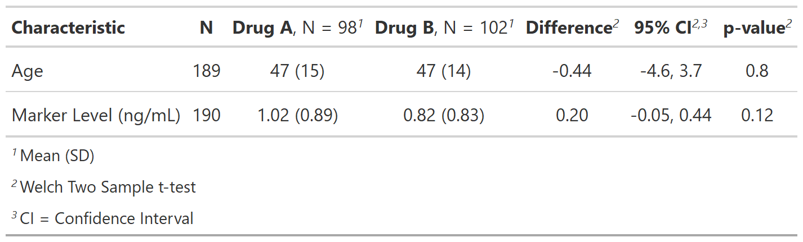
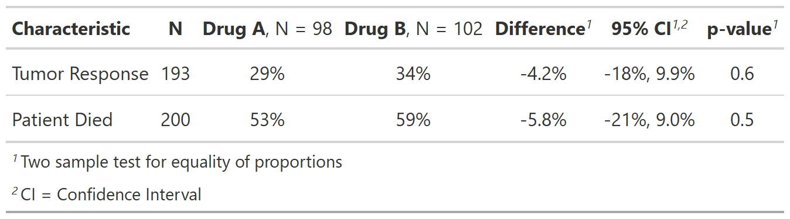

| add_difference {gtsummary} | R Documentation |
Add the difference between two groups (typically mean difference), along with the difference confidence interval and p-value.
add_difference( x, test = NULL, group = NULL, adj.vars = NULL, test.args = NULL, conf.level = 0.95, include = everything(), pvalue_fun = NULL, estimate_fun = style_sigfig )
x |
|
test |
List of formulas specifying statistical tests to perform for each variable,
e.g. |
group |
Column name (unquoted or quoted) of an ID or grouping variable.
The column can be used to calculate p-values with correlated data.
Default is |
adj.vars |
Variables to include in mean difference adjustment (e.g. in ANCOVA models) |
test.args |
List of formulas containing additional arguments to pass to
tests that accept arguments. For example, add an argument for all t-tests,
use |
conf.level |
Must be strictly greater than 0 and less than 1. Defaults to 0.95, which corresponds to a 95 percent confidence interval. |
include |
Variables to include in output. Input may be a vector of
quoted variable names, unquoted variable names, or tidyselect select helper
functions. Default is |
pvalue_fun |
Function to round and format p-values.
Default is style_pvalue.
The function must have a numeric vector input (the numeric, exact p-value),
and return a string that is the rounded/formatted p-value (e.g.
|
estimate_fun |
Function to round and format difference. Default is |
Example 1

Example 2

# Example 1 ----------------------------------
add_difference_ex1 <-
trial %>%
select(trt, age, marker) %>%
tbl_summary(by = trt,
statistic = all_continuous() ~ "{mean} ({sd})",
missing = "no") %>%
add_n() %>%
add_difference()
# Example 2 ----------------------------------
add_difference_ex2 <-
trial %>%
select(trt, response, death) %>%
tbl_summary(by = trt,
statistic = all_dichotomous() ~ "{p}%",
missing = "no") %>%
modify_footnote(all_stat_cols() ~ NA) %>%
add_n() %>%
add_difference(estimate_fun = ~paste0(style_sigfig(. * 100), "%"))